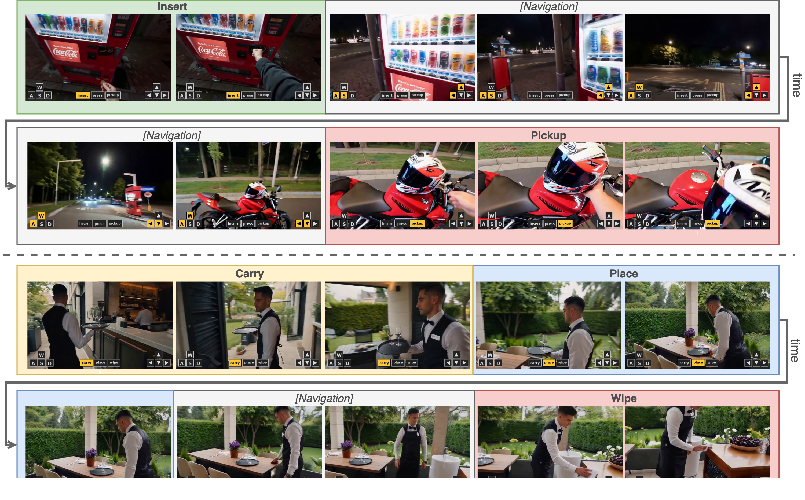
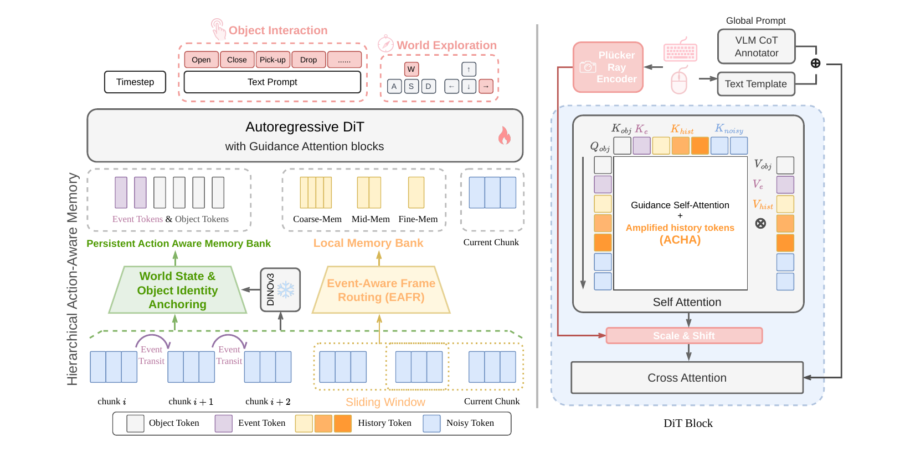

Rollouts across diverse scenes
Continuous trajectories that require both free-form navigation and object-centric interaction within
a single rollout — preserving viewpoint controllability while producing coherent interaction outcomes.


Interactive world models aim to simulate environment dynamics under real-time user actions. However, their action vocabulary is largely confined to navigation: most actions correspond to motion (walk, turn, look around), while interaction with objects in the scene (pick up plates, open doors, trigger physical responses) is either absent, restricted to game domains, or relegated to prompt-to-full-video scenarios. The resulting worlds are visually explorable but not truly actionable. We present ActWorld, an interactive world model that extends prior navigation-centric generators to support mid-rollout object interaction within a chunk-autoregressive framework. We argue the navigation–interaction gap stems from two bottlenecks: a data bottleneck — the lack of human–object interaction data with accurate, dense labels; and a memory bottleneck — recency-biased history compression discards the event-transition frames that causally determine subsequent object states, leading to an action-forgetting pathology. On the data side, we construct a 100K interaction video dataset, each annotated with per-chunk captions via chain-of-thought reasoning. On the model side, we introduce a hierarchical action-aware memory that routes history compression by interaction importance, complemented by a persistent memory bank that maintains event-update and object-identity tokens across long rollouts. Experiments show ActWorld supports both flexible navigation and rich object interaction within a single model, substantially improving interaction fidelity over navigation-only baselines without sacrificing viewpoint control.
A local memory bank routes and amplifies interaction-critical frames inside the sliding window; a persistent bank keeps compact event-update and object-identity tokens that survive beyond the window's eviction horizon — curing the action-forgetting pathology of recency-based memory.
A high-quality 100K-video corpus spanning 40 action categories, with every chunk annotated by a chain-of-thought VLM with a dense caption and an interaction-phase label — supervision that existing navigation-centric datasets lack.
A single model that jointly supports flexible navigation and rich object interaction, combining action-aware memory with a dual-branch camera-conditioning module — validated on I-Bench, a new long-horizon benchmark that interleaves navigation and interaction.

Each 33-frame chunk gets a dedicated description and structured interaction/phase labels; CoT prompting forces the VLM to reason over explicit visual evidence before committing, removing hallucinated interactions.
A geometric branch routes per-pixel Plücker rays through a shared FiLM module; a symbolic branch maps the 81-entry (keyboard, mouse) vocabulary to a text embedding — keeping fine viewpoint control.
Event-Aware Frame Re-assignment replaces recency bucketing with importance-ranked routing, so causally-critical contact / manipulating frames survive compression; Action-Conditioned History Amplification sharpens attention onto the keys that matter for the current action.
A FIFO bank of event & object-identity tokens (pinned at interaction phases) carries object identity across long navigation gaps; a Helios-style distillation reduces the 50-step teacher to a 3-step generator for real-time use.
Does the commanded action actually happen? A judge VLM rates each chunk on a 0–3 scale.
| Method | IF ↑ | Succ. ↑ | ≥2 ↑ |
|---|---|---|---|
| Yume 1.5 | 1.638 | 20.12 | 46.75 |
| HY-World 1.5 | 0.709 | 5.19 | 18.70 |
| Lingbot-World | 1.635 | 19.89 | 49.91 |
| Matrix-Game 3 | 0.295 | 1.88 | 8.27 |
| Astra | 0.949 | 5.83 | 19.36 |
| Infinite-World | 0.237 | 1.51 | 3.95 |
| ActWorld (Ours) | 2.557 | 57.8 | 84.5 |
@article{xiong2026actworld,
title = {ActWorld: From Explorable to Interactive World Model via Action-Aware Memory},
author = {Xiong, Zhexiao and Song, Yizhi and Kang, Hao and Yan, Qing and Jiang, Liming
and Yang, Jenson and Fu, Zhoujie and Fotiadis, Stathi and Wang, Angtian
and Liu, Zichuan and Liu, Bo and Yang, Yiding and Lu, Xin and Jacobs, Nathan},
journal = {arXiv preprint arXiv:2606.17730},
eprint = {2606.17730},
archivePrefix = {arXiv},
year = {2026}
}